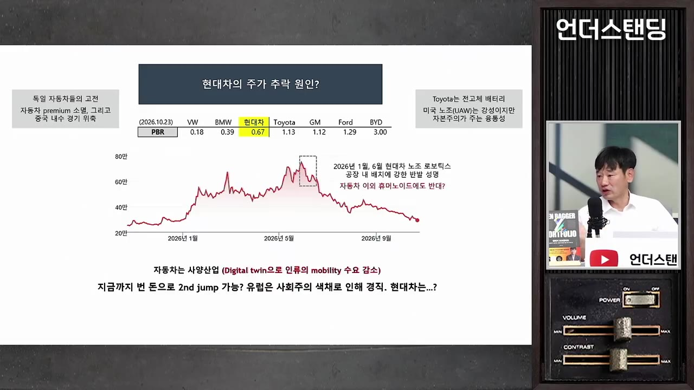

[김학주 교수 2부] 2배 증설 나선 마이크론. 메모리 단가 하락 경고. 로봇 막은 현대차 주가가 꺾인 이유 | 26년 11월 12일 방송
▶ 원본 영상 보기한눈에 보기
- 김학주 교수는 AI 확산의 걸림돌로 노동의 경직성과 반도체 공급의 경직성 두 가지를 꼽는다.
- 유럽 자동차 업체는 고용 안정 때문에 사업 전환을 못 해 주가가 낮고, 현대차도 노조가 휴머노이드 공장 투입을 두 번 거부한(1월·6월) 뒤 6월부터 주가가 꺾였다는 해석이다.
- 메모리 수요는 2030년경 5배로 보지만, 공급은 팹 증설(1.5배)·수율 개선(2배)·적층 확대(3배)로 약 9배까지 커질 수 있다고 본다.
- 공급이 늘면 메모리 가격은 떨어지겠지만 수량 증가로 이익은 늘 수 있고, 다만 밸류에이션(평가 배수)은 낮아질 수 있다.
- 유럽의 고령화·인력 부족·부의 불균형·인플레이션이 오히려 AI 도입 필요성을 키우며, 조정이 와도 짧고 얕을 수 있다고 전망한다.
이런 분께 도움이 됩니다
- 메모리 반도체(삼성전자·SK하이닉스·마이크론) 슈퍼사이클 지속 여부를 가늠하려는 분.
- 현대차 주가 흐름과 노조·로봇 이슈의 연결 고리를 알고 싶은 분.
핵심 내용
노동 경직성과 자동차 업체 주가
- 전기차·자율주행으로 자동차가 디지털로 제어되면 차별화 프리미엄이 줄어 가전제품처럼 되고, 중국 업체도 만들기 쉬워진다. (1:11)
- 유럽 자동차 업체의 PBR(주가순자산비율)은 대체로 1을 넘기 어렵고, 특히 독일 업체가 나쁘다. (3:07)
- 투자자가 "미래가 없다"고 보는 핵심 이유는 전기차 대응 부진보다 노동 경직성이다.
- 번 돈으로 다른 산업으로 변신해야 하는데, 고용 안정을 지켜야 해서 구조조정·직무 전환(엔진 기술자에게 전기 모터 연구)이 어렵다. (4:33)
- 미국 GM·포드는 UAW 같은 강성 노조가 있어도 회사가 어려우면 바뀌어야 한다는 데 수긍하는 자본주의 문화라는 비교.
💡 유럽 차가 싼 이유는 기술이 아니라 바꾸지 못하는 구조 때문이라는 주장.
현대차 노조와 로봇주 프리미엄
- 현대차 노조가 올해 1월과 6월 두 차례 "휴머노이드는 공장에 들어올 수 없다"고 밝혔다. (5:03)
- 1월에는 외국인 투자자들이 "설마" 했지만 6월에 확인되자 유럽과 비슷하다고 판단했고, 그때부터 주가가 꺾였다는 해석이다.
- 로봇주인 줄 알았는데 자동차주였던 것으로 평가가 바뀌었다는 설명.
- 휴머노이드는 실제 생산 라인에서 데이터를 쌓아야 성능이 오르는데 이를 막으면 발전이 어렵다.
- 조선·반도체 공장용 로봇으로 돌려도 노조가 반대할 것 같다는 게 교수의 예상이며, 그 불확실성이 부담이다. (6:25)
- 한국은 출산율이 낮아 1인당 생산성 향상과 로봇 활용이 필수라, 노동 경직성은 불편한 현실이다. (6:52)

메모리 수요 5배 vs 공급 9배
- 2030년경 메모리 수요가 5배가 된다고 보지만, 설비 증설만 보면 그에 못 미쳐 슈퍼사이클이 이어질 것이라는 기대가 있다. (9:16)
- 삼성전자·SK하이닉스는 증설에 보수적이다. 용인 클러스터는 삼성 2039년, 하이닉스 2045년→2033년으로 앞당겼다.
- 현재 글로벌 메모리 팹(공장 1기 = 웨이퍼 월 10만~15만 장): 삼성 7기, 하이닉스 6기, 마이크론 5기 = 18기.
| 회사 | 현재 | 증설 계획 |
|---|---|---|
| 삼성전자 | 7기 | 2기 추가 |
| SK하이닉스 | 6기 | 계획 거의 없음(혼잡 시 +2) |
| 마이크론 | 5기 | 5~6기 추가(가장 적극적) |
- 18기 → 28기면 약 1.5배에 그친다. (12:50)
🔁 공급 능력 9배 계산
- 팹 증설
- 수율 개선
- 적층 확대
- 합산
- 1팹 증설
18기 → 28기, 약 1.5배 (13:19)
- 2수율 개선
HBM 수율 40% → 2030년 80%, 2배 효과
- 3적층 확대
범프(구리 돌기)를 없애 8~12단 → 24~32단, 약 3배
- 4합산
2배 × 3배 × 1.5배 ≈ 9배
- 미세화 경쟁에서 삼성의 압도적 우위가 사라지고 세 회사 실력이 비슷해져 경쟁이 치열해질 수 있다.
- 진행자는 "층고를 낮추는 것이라 증설 효과는 아니지 않느냐"고 반문했고, 교수는 같은 높이에 더 많이 넣는 효과로 본다. (자막상 논의가 명확히 정리되지 않음)
반도체 가격 하락과 밸류에이션
- 공급이 늘면 AI 업계에는 가격 하락이 오히려 도화선이 되어 AI 정착이 빨라진다. (15:44)
- 가격이 떨어지면 빅테크는 수요를 줄이는 방법(퀀타이제이션, MoE, CXL, 광 네트워크)을 연구하게 되어 오히려 하드랜딩(급격한 침체) 요인이 될 수 있다. 가격이 떨어지는 쪽이 삼성·하이닉스에는 소프트랜딩 기회라는 시각. (16:44)
- 성심당 빵 비유: 싸게 팔아 판매량이 늘면 이익이 늘 수 있다. 이익은 늘어도 지금은 PER 10배 미만인데 밸류에이션이 더 낮아질 수 있다. (19:17)
- 메모리는 고정비 부담이 큰 산업이라, 지금은 경쟁을 안 하지만 경쟁이 시작되면 무조건 싸게라도 파는 출혈 경쟁이 될 수 있다.
- 교수는 다음 출연에서 "반도체의 흑역사와 공포 시나리오"를 다루겠다고 예고했다.
💡 가격 하락 속도와 수량 증가 속도 중 무엇이 빠른지가 관건이다.
유럽 위기와 AI 도입 필요성
- 2000년대 초 IT 버블은 인프라는 있었지만 수요가 없어 꺼졌고, 지금은 수요는 충분한데 전력망·규제 같은 인프라가 부족하다. 그래서 조정이 와도 깊지 않고 회복도 빠를 수 있다. (20:51)
- 유럽은 고령화와 인력 부족이 심해 돌봄 로봇이 필요하다. 부의 불균형은 AI가 누구나 아이디어로 돈을 벌 수단이 되어 완화할 수 있다는 주장. (21:27)
- 인플레이션을 확실히 잡을 수단은 피지컬 AI(로보틱스)의 생산성 향상이다. (22:49)
- 2008년 금융위기·2020년 코로나 때처럼 학습 효과로 AI도 점점 빠르게 정착할 것으로 본다.
- 피지컬 AI는 달걀 프라이처럼 섬세한 판단이 필요한 동작이 아직 어렵고, 로봇이 잘하는 일부터 시켜야 한다.
기억할 숫자·인용
- 메모리 수요 5배 vs 공급 능력 약 9배 (1.5 × 2 × 3).
- HBM 수율 40% → 80%, 적층 8~12단 → 24~32단.
- 메모리 팹 18기 → 28기.
- 현대차 노조 휴머노이드 반대: 1월·6월 두 차례.
- "로봇주인 줄 알았는데 자동차주였던 거죠."
생각해볼 점
- (영상 내용) 공급 9배는 수율·적층 개선이 계획대로 된다는 가정의 합산이며, 실제 달성 속도는 불확실하다. 영상도 수요 증가가 공급 증가를 상쇄할 가능성을 인정한다.
- (영상 내용) 현대차 주가 하락을 노조 이슈 하나로 설명하는 것은 단순화일 수 있다. 다른 요인(실적, 환율, 관세 등)은 영상에서 다루지 않았다.
- (참고) 수율·적층이 곧바로 팹 증설과 같은 효과인지는 진행자도 의문을 제기했다.
- 투자 관련 내용은 출연자 개인 견해이며 투자 판단의 근거로 단정할 수 없다.
바로 해볼 일
- 보유·관심 종목의 메모리 가격(DRAM·HBM) 추이와 수율 관련 뉴스를 확인한다.
- 다음 방송(반도체 흑역사·공포 시나리오)을 확인한다.